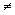

Example:
int number_of_cases, bottles_per_case;
Here is the list of the most common varibale types used in C++:
|
|
|
| short (short int) - 2 bytes
short x; or short x = 34; |
long - 4 bytes
long x; or long x = 34; |
| int - 4 bytes
int x; or int x = 34; |
float - 4 bytes, 7 digits precision
float x; or float x = 34.56; |
| double - 8 bytes, 15 digits precision
double x; or double x = 34.56; |
long double - 10 bytes, 19 digits precision |
| char - holds any single character on the keyboard
char c; or char c = 'a'; |
bool - True (1), False (0)
bool x; or bool x = TRUE; |
Every variable is indentfied by a name that is referred to as identifier. An identifier must start with either a letter or the underscore symbol. The remaining characters must all be letters, digits, or the underscore symbol.
In general, we should assign a value the type. An attempt to assing a value of a different type to a variable is referred to as type mismatch. One has to be very careful that not all compilers will allow type mismatch, i.e., may produce an error when such attempts are made.
Arithmetic Operators and Expressions
To perform mathematical calculations, we combine variables and/or numbers
using arithmetic operators such as: + for addition, - for subtraction,
* for multiplication, and / for division. The arithmetic
operators can be used with numbers of type int, long, double, float, long
double, short, or with a combination of different types. When you use arithmetic
operators, you need to be careful that if the correct variable types are
not used, the result can be different from what you were expecting.
For example: 7.0/2 = 3.5, 7/2.0 = 3.5, however, 7/2 = 3 (not 3.5).
The reason for such a significant difference is because the last one is
actually uses integer division. Perhaps the most significant problem
will be seen in cases where the numerator is smaller than the numerator.
In such cases the integer division will result 0. An example of such
a case is 5/9 = 0.
There are some shorthand notation that combines the assignment operator
( = ) and an arithmetic operator. The genral form for this notations is:
Variable Operator = Expression,
which
is equivalent to: Variable = Variable
Operator (Expression).
The expression can be another variable, a constant, or a more complicated
arithmetic expression. Here is some examples:
|
|
|
| total += 2; | total = total+2; |
| amount += tax - rebate | amount += amount + (tax - rebate) |
Similarily, we may use -=, *=, /=, and %=.
Activity:
Dtermine the answer to the follwoing stetemtns:
Question 2.1 3 -= 4*5;
Question 2.2 40 %= 16/2;
Question 2.3 88 /= 82%4;
Simple Flow of Control
In the programs that you have seen so far, we have had a list of statements
that was executed in the order that are witten into that .C file.
In more complicated programs, you may need to change the order in which
statements are executed. The order of execution for statements in
your program is referred to as flow of control.
Let's look at one example. Suppose you are organizing an event
that cost $12 for everyone older than 8 and $6 for any one 8 year and younger.
One way to do this is to say the ticket is $12, if you are 8 or younger,
then it is $6. In this case, in you can write:
|
|
|
| ticket = 12;
if(age is 8 or younger) ticket = 6; |
double ticket = 12.00, age;
if(age <= 8) ticket = 6; |
There is another way to do this.
|
|
|
| if(age is 8 or younger)
ticket = 6; else ticket = 12; |
if(age <= 8)
ticket = 6; else ticket = 12; |
Both of these do the same thing. In both cases, you will change the flow of execution when you reach the statement; "age is 8 or younger". If that statement happen to be true, i.e., age is 8 or younger, then the value for ticket will change to $6, otherwise, you will go with its initailized value of $12.
In general, the statement in the paranthesis is either TRUE or FALSE.
Depending on that being true or false, you will change the flow of execution
of the statements in the program. In order for your program to decide about
the flow of the execution, it uses a comparison operator. Examples
of comparison operators are:
1) equal to , = , which
will be written as ==
(2 ='s) in C++,
with a general form of: statement1==
statement2.
Example:
y ==
x
+ 1
2) not equal to , ,
which will be written as !=
in C++, with a general form of: statement1!=
statement2.
Example:
y !=
x
+ 1
3) less than , <,
which will be written as <
in C++, with a general form of: statement1<
statement2.
Example:
y <
x
+ 1
4) less than or equal to
, ,
which will be written as <=
in C++, with a general form of: statement1<=
statement2.
Example:
y <=
x
+ 1
5) greater than , >,
which will be written as >
in C++, with a general form of: statement1>
statement2.
Example:
y >
x
+ 1
6) greater than or equalt to
, ,
which will be written as >=
in C++, with a general form of: statement1>=
statement2.
Example:
y >=
x
+ 1
7) OR, which will be written as ||
(2 of the |'s) in C++, with a general form
of: statement1|| statement2.
Which may be True when either one of the two
statements
are TRUE.
8) AND, which will be written as &&
(2 of the &'s) in C++, with a general
form of: statement1&&
statement2.
Which may be True ONLY when both
statements
are TRUE.
Now that you learn about changing the flow of control, let's write a program called ticket.C that asks users to enter an age and displays the cost of the ticket based on the criteria that was given above. Use both mehtods to make sure
// ticket.C - This program asks for an age and display the cost
of the ticket
#include<iostream.h>
int main( )
{
double age, ticket = 12;
cout << "Please enter the age
\n";
cin >> age;
if(age <= 8)
ticket
= 6;
cout << "Your ticket costs " <<
ticket << endl;
return 0;
}
Activity
Change the ticket.C program such that it display $6 for people who
are 8 years or younger or 65 years or older.